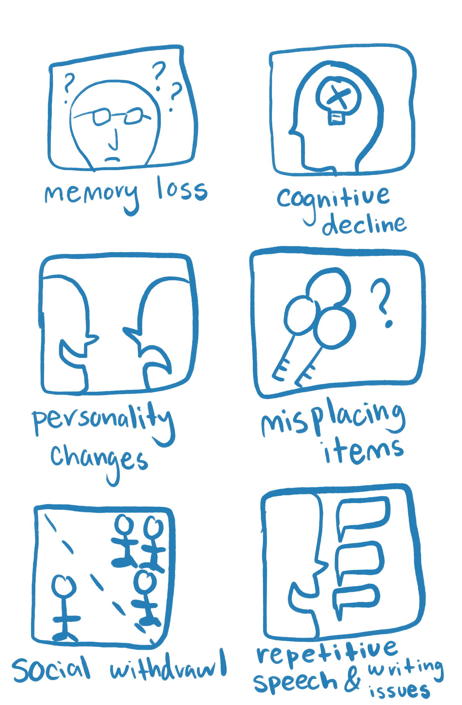
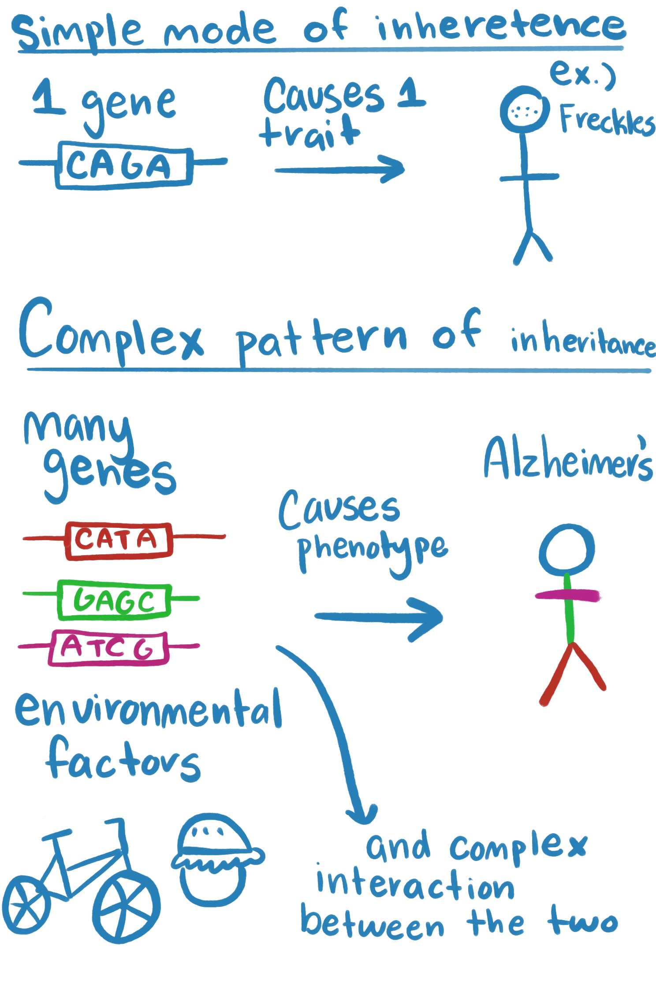
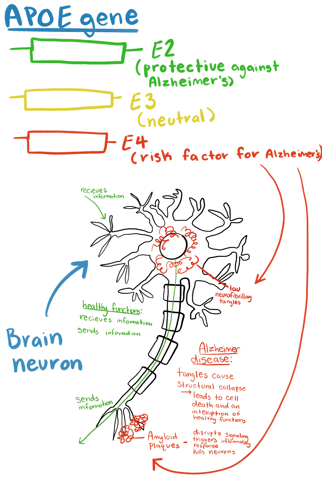
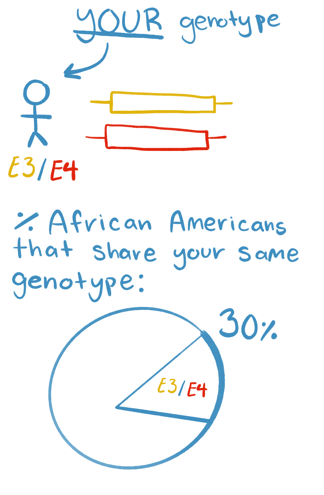
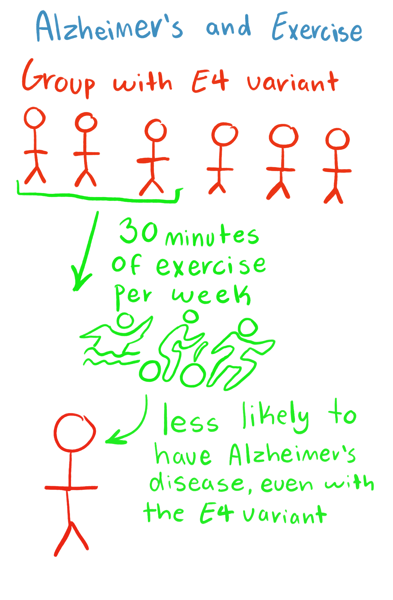

Overview
You have selected to participate in a Direct-to-Consumer (D-T-C) genetic testing service!
Informed Consent
Before Participating: You were asked to give informed consent before agreeing to submit your genomic information to our company for testing.

But there were also finer points to giving informed consent that we would like to go over.
Data Disclosure Risk
How are test results reported, and under what circumstances can results be disclosed?
Results are returned in a return of results where your results will be effectively communicated to you in a way to engage full understanding. Your results may be disclosed by opting-in to have your results used for research purposes
Law Enforcement Access
Your results may be subpoenaed by law enforcement There may be a potential transfer in ownership of our company, where our agreement not to disclose your genetic data may become void Hacking can occur, and your genetic data may not be safe But overwhelmingly, disclosures are made by our participants You are responsible for safeguarding your information from third parties, family, etc. Please be advised to inform yourself fully before sharing your genetic data with any other third party Third parties that work with law enforcement include: GEDMatch and Family Tree While your data is deidentified, that is to say, your name and information are not attached to our store of DNA, you may still be able to be found through D-T-C databases, identifiable public databases, genealogical records, and de-identified public databases A large pool of Americans of European descent are overrepresented in our data pools. This means this population is especially at risk of having their de-identified information identified. Further discussion of why that is is discussed in the linked article Lottery winners and accident victims: Is happiness relative? (Brickman et al., 1978)
Law enforcement uses its own genomic database called CODIS
Black Americans are overrepresented in this database as compared to their percentage in the population. This is relevant because while CODIS uses STRs to identify individuals, it has been shown that the STRs in CODIS can be matched with SNPs found and used in D-T-C products. Identity inference of genomic data using long-range family searches (Erlich et al., 2018)
This is something to consider when uploading your genomic data to a third-party service.


Familial Information
Could this test be informative about other family members’ health or relationships?
Your genetic information is familial; you will also be gaining information about non-consenting family members. You do not have to opt-in to DNA relatives
Emotional Risks
Are there any emotional risks associated with this test?
You can learn about your carrier status, health risks, family relationships or ancestry (non-paternity or misattributed parentage, non-disclosed adoption, sperm donation, or otherwise traumatic lineage) misattribution, heteropaternal superfecundation, medical mix up, mistake, or crime (e.g. fertility fraud), surprising relatedness (de-identifying “anonymous” donors, previously unknown relatives, inbreeding in parents or relatedness to sexual partner)
Remember you will have to opt-in to DNA relatives
Emotional risks associated with the test depends on how informed you are as a consumer, the more knowledgeable you are the less likely to be completely surprised with what you learn you will be
Consider hiring a genetic counselor to discuss any concerning results you may receive even further than the overview and scientific details of this return of results
A well-established psychological construct that we will return to our baseline levels of happiness eventually even after receiving bad news (or good) Lottery winners and accident victims: Is happiness relative? (Brickman et al., 1978)
Do you have the opportunity to ask questions?
You may hire a genomic counselor and ask them questions, however a more accessible way to ask questions is by looking at the 23andme customer care page 23andMe Customer Care
Interpreting Results
What do the test results mean?
Alzheimer’s Disease
Alzheimer’s is a complex, progressive, and irreversible neurodegenerative brain disease that affects 7 million people in the US. Symptoms include memory loss, cognitive decline, and personality changes. Late-Onset Alzheimer’s disease is diagnosed after 65 and describes most cases.

It has a complex pattern of inheritance, meaning that the condition is not caused by one gene, but many genes working together, and is very heterogenous, meaning that the condition is highly variable and that people with the same condition may have different symptoms, different levels of severity, or different underlying causes.

The three most common variants of the APOE gene are E2, E3, and E4. The APOE gene (apolipoprotein E gene) is commonly tested for its clinical significance in prediction of Alzheimer’s. The E4 variant is associated with increased risk, but the E4 variant is neither necessary nor sufficient for causing Alzheimer’s (23andme).

You are heterogenous for this trait
What that means is that your genotype is E3/E4. That means that you have one risk factor variant of the APOE gene. E4 is the risk factor, E3 is considered neutral, and E2 is a protective factor. We can calculate what percent of African Americans have your same genotype (E3/E4) by using the Hardy-Weinberg equilibrium (Q = .18, P = 1-.18, 2(q(p)) = .295) 29.5% of African Americans share your same genotype.

Modifiable Risk Factors
Genetics are not destiny. To modify your risk for Alzheimer’s, you can exercise for 30 minutes per week. A study conducted 23andme found that adults over the age of 60 with an E4 variant in the APOE gene who average at least 30 minutes of exercise per week are less likely to have Alzheimer’s disease. Exercise is a modifiable risk factor for Alzheimer’s. Environmental Modifiers include diet, type 2 diabetes, smoking, cardiovascular disease (obesity, high cholesterol, high blood pressure).
